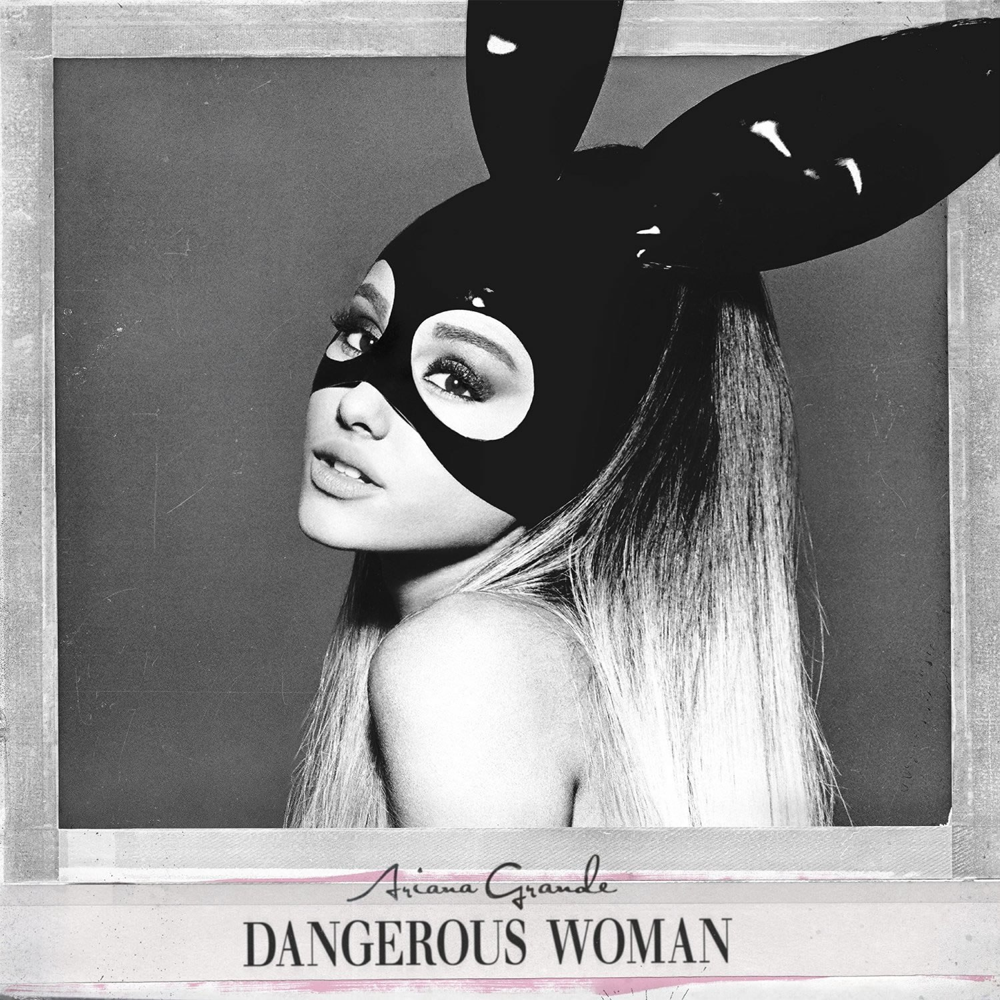

1.everyday Ariana Grande

The Best Part of this Song That I personally Love is The catchy voice of Ariana With the perfect beats in background !!
2.I need U - BTS

I don't know why but it just makes me wan't to dance and hop around !!
along with JIMIN"S
"I need you girl 넌 아름다워"
"I need you girl 너무 차가워 "
Oh they are my favs
3.Ain't my fault - Zara larrason

This song seems to have every genre of pop
beginning from rap , to high notes to beats
everything!!